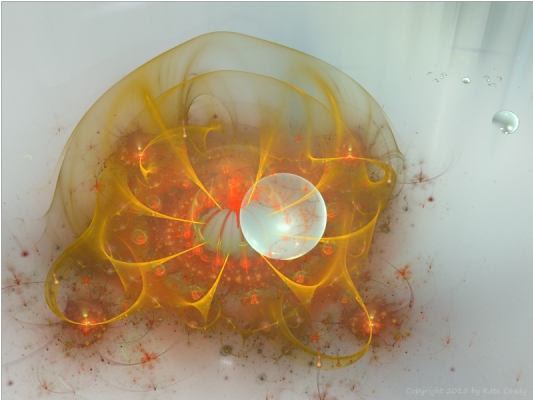

Eve of Evil (Part 1)
by
Gregg Marchese
Darlai tried to control her dread as the pulse-helm descended, and pressed her arms into the soft bulk of the slime chair in anticipation. Her death wish had been shaped into a compulsion for the thrill of danger, and she both feared and welcomed the coming journey. Though she could see the helm as only a rippling distortion in the air, she could feel it tingling on her scalp, the lifting of her dark hair in its currents. As the helm's field settled into her brain, all her body and being leapt with arousal. The vague angst of life as Darlai 19, test subject with the Outward Powers Project dissolved, and her terror and thrill as psychonaut adventurer emerged.
Neural field contact established. Away we go again. Darlai hated that flippant voice speaking in her mind. Couldn't her Handler express a shred of compassion just once? Would it rend him so deeply to ask if she was scared? As usual, she channeled her hatred and rage into a promise to search further, risk greater danger, than ever she had before. Maybe then he would respect her as a real human being.
Yup, she sent back using the mind-speech the pulse-helm bestowed. And I'm already sensing the Aether. Plenty of trails already voltened, but I want to try a new one today.
That is not approved, Darlai 19. You know you don't take initiative in the Program. Milden's tone was so stern that Darlai's spirit cringed. Proceed upon pre-established pathways to the Periblima and await mission instructions.
Darlai hid her shame, then felt frustration at the meek caution with which the Project restricted her — and itself. She did not know whether her Handler could tell she was hiding something from him, but she was determined not to let Milden know he had disturbed her. He would certainly know if she voltened her own path though, so she sent, All right, I'm taking one of the boring old routes.
She sensed the smug glee in his reply: Boring but safer. Just the opposite of the reward you'll get when you return.
She would not be distracted now. With an effort of will she sent her spirit voltening forward, that strange motion of her soul that came from both its own volition and its interface with the neural field of the pulse-helm. She surged along the route, an energy trail etched into the Aether by the passage of many other subjects before her. She'd taken this route herself enough times to know it well, though it still took most of her focus to traverse it. In some of its sections the Aether became chaotic, and she could lose a portion of her soul, as had a few other subjects recently. Darlai however was among the most focused of all the psychonauts, assessed to have one of the strongest ambitions to earn approval. So when she approached the Infinity Contortion, that double-looping spiral where some subjects panicked, Darlai constricted her spirit and let her energy swing through the turns without fear. It was really a matter of flow, of relaxing into helpless movement, allowing the known definition of the route to contain her and sweep her along. She was good at surrendering to forces greater than herself.
Traverse of Infinity Contortion complete, Milden sent unnecessarily. Graceful moves as usual. Would that I could have seen you wriggle.
Darlai wanted to send back a sarcastic retort, but strove to maintain a respectful dialogue with her Handler on these missions. His status in the Program was at risk as much as her own, and she so wanted them both to succeed. Success for all the people of the Valley Cities — and all their descendants — depended on cooperation. Again she hid her feelings and sent, Voltening along Stellar Linearity. No anomalies detected.
The next section of the route was a long straight-away, running among a series of voids that corresponded to mass bodies in the physical universe. Here in the strange presence of the Aether, they registered to her spirit-senses as looming zones of emptiness. She hurtled past carelessly, accelerating along the Linearity she knew was safe.
Darlai 19, your speed is becoming unsafe. Milden seemed more annoyed than concerned. Are you so eager to finish this mission? Slow down. That's a Program Imperative.
Darlai felt another sting of guilt, that she'd forced her Handler to issue an Imperative. She could not help her trained impulse to please, and slowed immediately. Milden aspired to Management level in the program, and if one of his subjects was lost in the Aether or came back deranged beyond a prescribed degree, he might not advance. Darlai knew his real reason for cautioning her held no concern for her spirit personally. At this she felt a wave of shame, to which she habitually responded with grim determination. She knew she was expendable, but at least she could help the peoples of her home city, of all the Valley Cities. If she could only succeed on these missions, perhaps then she would be worthy.
She approached the end of the Linearity. I can see the Periblima now, she sent. It's beautiful, she wanted to send, but Milden had never shown any interest in the sensual aesthetics of the Aether, and she had learned to withhold such frivolities. Milden only wanted surveillance data on the strange Outward Powers that moved beyond the Periblima. Because that's what the Cynosures, the wise leaders of the Cities and the Program's ultimate superiors, wanted.
Darlai guessed that soon they'd be wanting something more.
She watched the shimmering, billowing colors of the Periblima swell gradually larger and brighter as she approached. Her excitement and terror swelled larger too. Soon she'd have to make that plunge into unreasoning faith that felt like an acceptance of death. It always left her helpless with terror, but also thrilled that she could do it. Though he never said so, Darlai was certain that Milden — and above him the Cynosures — must be proud of her. They must know how hard these psychic journeys were, and one day would praise her for her courage.
Approach the Periblima and transverse to Outward Realm.
So matter-of-fact, Darlai thought, as if her Handler was instructing her to take a lift to a lower level of the city. I'm already up against it. I'll need a spell to prepare, then I'm through. She clenched on the impulse to send: You want me to bring back a little pet for you and the Cynosures to play with?
Maybe Milden sensed that. No direct contact. Surveillance only. Then get your spirit back into this body here unmangled.
Darlai hovered her spirit before the shimmering, swirling energy wall, iridescent patterns seeming to gleam and glow with colors that could never be seen by human eyes.
Assess your surveillance for potential Powers that can be captured, brought back, and examined for Other Wisdom, Milden sent. But remember: no direct contact with any Powers yet.
He's afraid, Darlai thought to herself in that mode she hoped he could not hear. And rightly so. They don't have their containment systems ready back in the Cities for these Powers we psychonauts are encountering. As she sought to settle her spirit before the shimmering field of the Periblima, she knew a familiar terror. She never felt ready herself, no matter how many times she'd crossed over. The things that loomed on the other side...
But Darlai also loved the terror. She felt more alive in its chill grip than at any other time in her life. They made me this way, she thought helplessly, knowing there was no way to transcend such conditioning. So she'd learned to embrace it, and no better way than by plunging through this weird wall that shielded the known living universe, and exposing her spirit to the Outward Powers.
Once her terror was fully embraced, Darlai allowed a pause like a swimmer taking a breath before diving. Don't miss me, she sent, then voltened her spirit forward into the Periblima.
The coiling colors sliced around her and through her, evoking strange emotions: blends of manic alarm and vast boredom, existential mirth and cosmic grief, wrenching longing and placid contentment. Darlai knew not to identify with any of it, but let herself pass through, resounding to all the emotions of life without attaching to them. She willed her spirit to plunge deeper, and the emotions softened in intensity, but the Periblima thickened, slowing her progress. Now Darlai surrendered all will and purpose, emptied herself of any effort or goals, and thus became as death. Her final passage was a dazzling rush, and all the swirling colors became long streaks dashing behind her, as she felt herself burst from their influence into —
The Outward Realm. Here was an endless nothingness scattered with cold, aching presences. It was like a dense gray fog of utter emptiness, where even the communion of mind she shared with her Handler was severed. She was as alone as any human had ever been. Within the fog's void dark entities loomed, reaching out waving tendrils of raw hunger and hate. At once one of those tendrils writhed toward her, and Darlai darted her spirit aside. If it touched her before she was ready it could coil about her spirit and draw her into a maw denser than darkness. Besides, this tendril belonged only to a Level Three entity, a minor Inimica. Nothing new, and not something Milden would be interested in.
She cast her spirit forward and drifted cautiously deeper, searching for new entities. Many of these Level Three's were now massing nearest the Periblima, drawn no doubt by the presence of human spirits the Program was constantly sending through. She felt stronger emanations of hate and evil deeper ahead, like distant black suns radiating malice. Those would be the Level Two Powers. And beyond even them, like a far-away storm looming at the borderless boundaries of existence, she could sense — something. Or more accurately, a void that was also an aware questing will, like an essence of hunger and horror. A Level One?
Darlai tried not to focus on that background hunger, but on the Level Two's she was now entering among. Milden could not contact her now, and could never specifically approve the kind of entity that she might assess for use in the Program. Darlai had some idea, though. It would be something that could take over a human spirit and make it ruthless, brutal, and malevolent, careless of pain and hardship, obsessed with destruction and chaos. It could transform a human body into a stronger and more deadly form, yet still able to coordinate with others of its kind. Essentially, something the utter opposite of the extreme compassion and placidity of the Cynosures. Darlai used her spirit senses to sort among the looming presences and Powers, scrutinizing the various waving tendrils while avoiding their touch.
Finally she sensed the signature she was looking for: a languidly waving strand of dense darkness surrounded with a hazy shadow. An Ab-norm, as the psychonauts in the Program called it among themselves, for the cringing feeling of wrongness it evoked. Level Two somato-psychic possessor, the Handlers and other Program officials designated it. Darlai had encountered these Level Two's before, and thought it might be just the thing the Program could use. She followed the gently writhing strand, careful not to let it touch her, and keeping some layer of her soul-stuff diffused around her so that other feelers did not find her.
As she followed along, she sensed that the tendril tangled with another, then two more, forming a wriggling knot. That probably meant the Ab-Norm was communing with others like itself. Darlai was able to sort out the original strand and trace it to its source. Here loomed a dense dark core, pulsing and bulging with restless hate and malice, overlaid with a thin shadowy nimbus. Other tendrils writhed out from its core and arched into the Aether.
Reconnaissance only, Darlai reminded herself. But sometime soon they were going to instruct her to bring something back. The Cynosures were increasingly eager to directly experience the bizarre energies the psychonauts were encountering. All the reports of vicious evil, brutal cruelty, and malevolent hunger were a fascination to the Cynosures, whose own souls were far refined into peacefulness and love. They were wise enough to know that great power awaited in the fusion of opposites.
Desperation is the progenitor of results, Darlai knew, and so was desperate to prove her worth in that effort, not just to Milden and the Cynosures, not even to all the people of her city, but also to their far-future descendants. For the Cynosures had announced their prophecies, that millions of years in the future they had beheld the final end of the Valley Cities. Horrid half-human monsters would attack in hordes, and drive the peoples into a grim land far darker and colder than even the current time of the Blood Sun.
Thus the Cynosures had conceived the Outward Powers Program, to explore the hope that a mingling of opposite energies could infuse their descendants with the vital power necessary to survive in that terrible future. It was the least Darlai could do to risk her much lesser soul to gain them that hope.
The Program was too conservative, though. She was ready now to go further, to direct contact. None of these Powers could do the human future any good banished here beyond the Periblima. Milden's disapproval and dominance could not reach her here either though.
She prepared herself to touch the black pulsing evil of the Level Two before her. She embraced her terror, and at the same time emptied herself of will. She sensed that, when making contact with the Powers, any remnant of volition would be seized upon and devoured. So in that state of terror and emptiness, she extended a strand of her soul and slowly forcing it closer, touched the tendril.
At once all the Ab-Norm's tendrils stiffened and began to surge inward. The central core swelled larger, and the surrounding shadow nimbus was absorbed into that expanding core. The whole entity became a dense black sphere, which then split and opened, yawning into a cup-like rim with a hollow within, seething with hate and hunger. It leapt at Darlai's spirit.
That first touch had sent shudders of revulsion and madness through her, but when the maw rushed forward to swallow her, Darlai felt her protective terror suddenly deflate to calm acceptance, and her thrill at danger subside into a love of death. She longed to let the Ab-norm utterly surround her, enter her, become her —
Not yet! She flinched away, grasped desperately at her purpose. She must do her utmost for the Program. Though she longed with growing power to surrender, to let the entity rule her spirit and free her from pain, she sought for that terror she had once prized. It was faded, like an almost forgotten memory, but she grasped for it and pulled it close. With its energizing force she tore herself from the pull of the Ab-Norm's maw. She spun aside and retreated behind another, more diffuse Ab-Norm nearby.
It too quickly drew in its tendrils and solidified, and splitting open, surged up to devour her. Darlai barely dodged in time, surprised, then remembered that the Ab-Norms communed with one another. She turned and, using the impulse of her terror, fled the region. Other Ab-Norms solidified and lunged at her, but she dodged among them, careening back toward the Periblima. On the way she encountered a cluster of the aroused entities, and one lunged to devour a trailing shred of her spirit. She sucked in her loose plume and streaked onward. She soon saw the Periblima's pale, faintly gleaming plane ahead, and plunged through.
Darlai lay limp in the slime chair and let her panting breath settle as the helm receded. Milden's voice came through her distress. "The neurassessor shows a trace of Influence. Did you make contact with an entity in the Outward Realm?"
Focused on allowing her muscles to relax into the cushioning chair, Darlai tensed again. Was that disapproval in his question? "I did make tentative contact with one of the Powers. But only briefly! I think it's a type you wanted me to assess." She knew her voice was strident, but could not help it. She dropped her head back into the yielding bulk and sighed.
"You are not approved to make direct contact yet." Darlai glanced over at Milden where he looked out from the neurassessor field, its orange glow casting his face in sags and shadows, his paunchy form in a gray suit piped in black. His eyes glinted hotly, but his voice remained even. "The Program is not yet prepared to receive such Powers here in Endjolos." He glanced back into the glowing field surrounding him. "It was a Level Two somato-psychic possessor. If something like that came back with you and got loose in the City..." He flicked his stare back at her with steady disapproval.
Darlai cringed. She hated when he looked at her that way. She so desperately wanted to please him, to make the Program a success and reassure her scared people. She was only trying to help!
Then Milden's stare softened. "That is indeed the type of Power we are seeking. And perhaps you are nearly ready to engage and transport, since you did make contact, yet brought back no actual Influence. The Cynosures will be intrigued. But you must act only on strict Program orders, you understand."
Darlai stared back and nodded. She felt both shame at her mistake, and relief that she might be forgiven. Milden could have expelled her from the Project, and then what would become of her? She had been bred and conditioned for only this work.
This time she almost welcomed what came next, if it meant she was forgiven.
He emerged from the nimbus field and stared at her as she reclined limp in the slime chair, her light blue singlet clinging to her body where the chair had not yet absorbed her sweat. Now his eyes held a different look than disapproval. He walked over and stroked his fingertips along her shoulder, then her thigh. Her skin prickled in revulsion, but her body was too exhausted to do more than try to squirm away. The chair absorbed her movements as Milden trailed his fingernail along the seams in her suit, opening them. His moist breath gusted in her ear. "I need you to cooperate with me more. We're a team after all." He parted a seam of his own suit and climbed on top of her.
Darlai went numb. She'd long since stopped feeling anger at his lies. This was not the kind of cooperation she needed in the Program, but it was to be endured if she wanted to continue.
Afterward, Milden spoke without turning as he walked toward the door of the chamber. "Take a one hour relaxation meditation, then return to quarters and start recovery patterns. You deploy again in four Diurns." He was gone out the door.
© 2011 by Gregg Marchese.
Images © 2015 by Kate Coady.